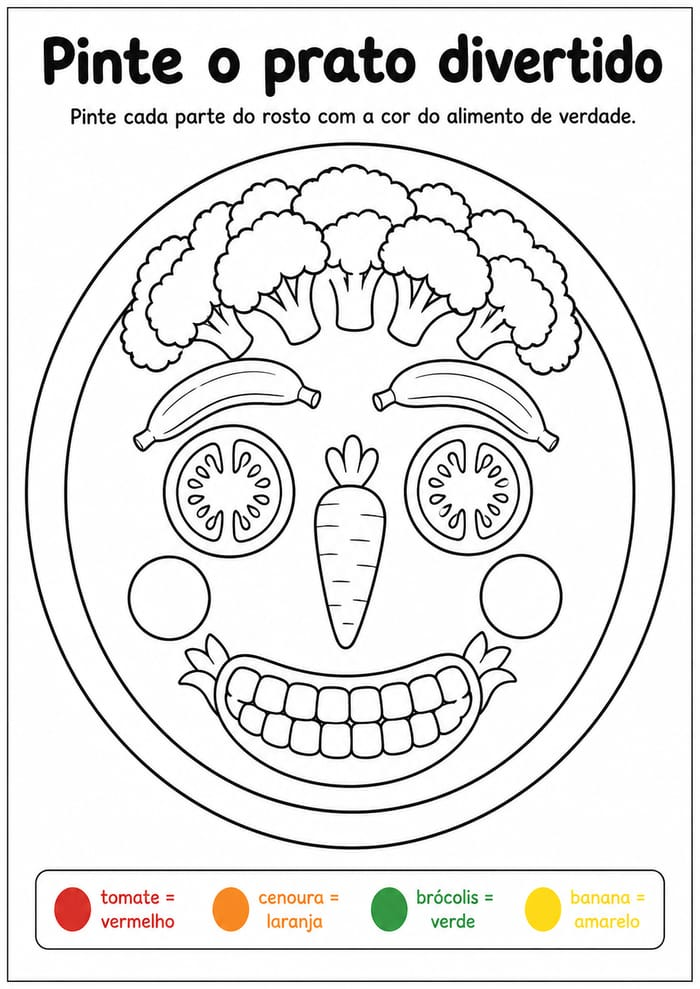

Pinte cada parte do rostinho com a cor do alimento de verdade.

📱 Sem impressora? Sem problema: dá pra pintar direto na tela do celular ou tablet, com o dedo mesmo.
- 1Imprima a ficha ou abra a atividade na tela do celular.
- 2Peça pra criança pintar cada parte do rostinho com a cor do alimento.
- 3Enquanto ela pinta, fale o nome de cada alimento em voz alta.
- 4Deixe ela pintar do jeito dela. Se quiser o brócolis roxo, tudo bem.
- 5No fim, elogie o desenho. Não fale em comer.
Criança não prova o que não conhece, e conhecer não começa pela boca. Pintando, ela passa minutos com o alimento na frente sem ninguém pedir pra comer.
As pesquisas mostram que aceitar um alimento novo costuma exigir vários encontros com ele, e que esses encontros não precisam ser comendo. Já a cobrança afasta.
E toda ficha traz uma atividade pronta assim, sempre diferente:
Esta ficha é a porta de entrada: só reconhecer o alimento no papel ou na tela, sem nenhuma pressão. Conforme o bloco avança, as atividades passam a envolver tocar, cheirar e, no fim, provar o alimento de verdade. Tudo no ritmo da criança.
Fazer a criança olhar e nomear o alimento com calma, criando familiaridade antes de qualquer expectativa de comer.
Comece você. Pinte um pedacinho e pergunte "de que cor é o tomate?". Se ela pintar tudo da mesma cor ou rabiscar por cima, deixe. O que conta aqui é o tempo que ela passa com o alimento na frente, não o capricho do desenho.
A criança pintou e nomeou pelo menos um alimento sem resistência. Isso já conta como avanço.